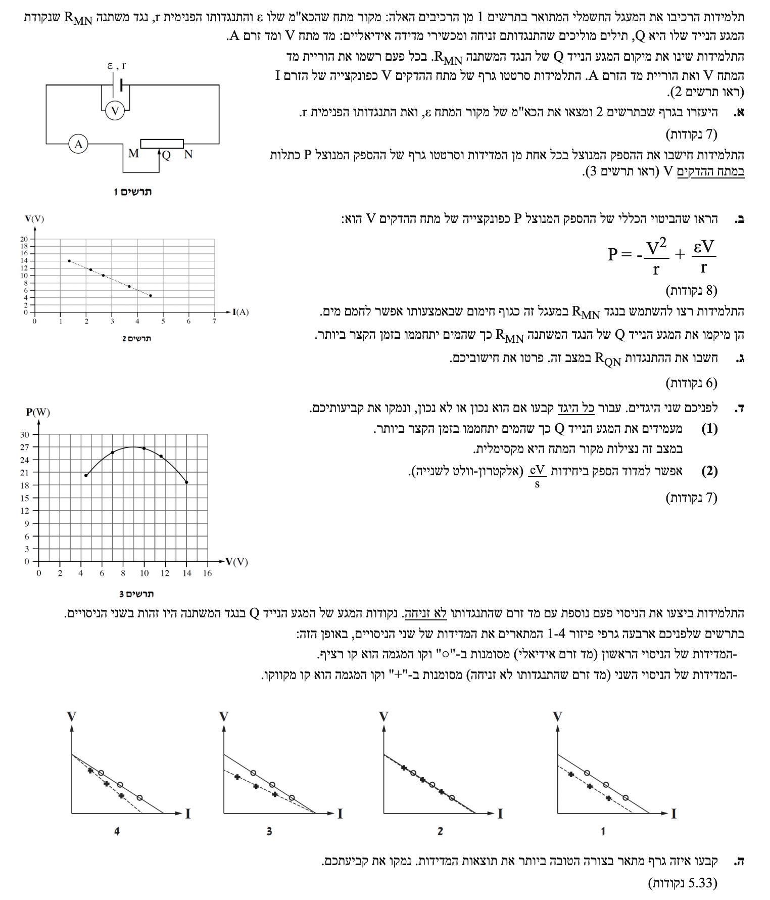
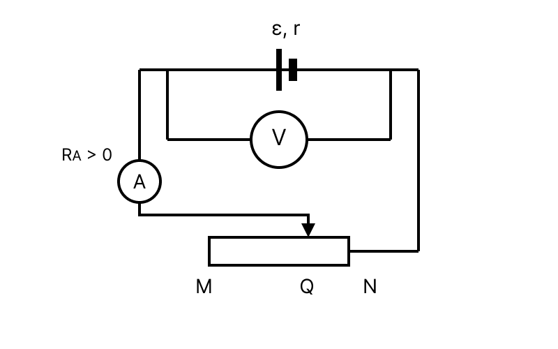

תלמידים יקרים, לפנינו שאלה קלאסית העוסקת במעגל זרם ישר עם מקור מתח מעשי (בעל התנגדות פנימית), נגד משתנה וקריאות של מכשירי מדידה. נפתור את השאלה שלב אחר שלב ביסודיות.

נתון לנו גרף 2, המציג את מתח ההדקים \( V \) (בוולטים, \( \text{V} \)) כפונקציה של הזרם במעגל \( I \) (באמפרים, \( \text{A} \)). על פי הגרף, ניתן לזהות נקודות מוגדרות היטב: למשל, עבור זרם של \( I_1 = 2\text{ A} \) המתח הוא \( V_1 = 12\text{ V} \), ועבור זרם של \( I_2 = 4\text{ A} \) המתח הוא \( V_2 = 6\text{ V} \). כל היחידות נתונות במערכת MKS ואין צורך בהמרות.
אנו מתבקשים למצוא את הכוח האלקטרו-מניע (כא"מ) של מקור המתח המסומן באות \( \varepsilon \), ואת ההתנגדות הפנימית שלו המסומנת באות \( r \).
הנוסחה המקשרת בין מתח ההדקים לזרם במקור מתח מעשי (מתוך דף הנוסחאות):
\( V_{ab} = \varepsilon - rI \)
אנו מזהים שזוהי משוואה של קו ישר מהצורה המתמטית \( y = mx + n \), כאשר ציר ה-\( y \) הוא המתח \( V \), ציר ה-\( x \) הוא הזרם \( I \), נקודת החיתוך עם הציר האנכי היא הכא"מ \( \varepsilon \), ושיפוע הגרף הוא המינוס של ההתנגדות הפנימית \( -r \).
נחשב תחילה את שיפוע הגרף בעזרת שתי הנקודות שחילצנו: \( (2, 12) \) ו- \( (4, 6) \).
מכיוון ששיפוע הגרף שווה ל-\( -r \), נוכל לרשום:
כעת, כדי למצוא את הכא"מ \( \varepsilon \), נציב את אחת הנקודות למשוואת מתח ההדקים:
נתון לנו מתח ההדקים \( V \) המסופק למעגל החיצוני, והספק מנוצל \( P \). נתונות לנו גם התכונות הפנימיות של המקור: הכא"מ \( \varepsilon \) וההתנגדות הפנימית \( r \) שמצאנו בסעיף הקודם.
אנו נדרשים להראות מתימטית (להוכיח) שההספק הכולל המנוצל במעגל החיצוני מבוטא על ידי הפונקציה: \( P = -\frac{V^2}{r} + \frac{\varepsilon V}{r} \).
נשתמש בשתי נוסחאות מרכזיות מדף הנוסחאות:
הספק חשמלי מנוצל בחלק מהמעגל: \( P = V_{ab}I \)
מתח הדקים של מקור: \( V = \varepsilon - rI \)
מטרתנו היא לקבל ביטוי להספק \( P \) שתלוי במתח \( V \), בכא"מ \( \varepsilon \) ובהתנגדות \( r \). לכן, עלינו להיפטר מהמשתנה \( I \) (הזרם).
תחילה, נחלץ את הזרם \( I \) מתוך משוואת מתח ההדקים:
כעת, נציב את הביטוי שקיבלנו עבור הזרם \( I \) אל תוך משוואת ההספק \( P \):
נפתח את הסוגריים על ידי הכפלת המתח \( V \) במונה:
נפריד את השבר לשני גורמים כדי להגיע לתצורה המבוקשת בשאלה:
התלמידות רוצות לחמם מים בזמן הקצר ביותר. משמעות הדבר היא שעלינו להפיק את ההספק המקסימלי (מרב האנרגיה ליחידת זמן) על גוף החימום. יש לנו את גרף 3 המציג את ההספק כפונקציה של המתח \( P(V) \), ואת ערכי המקור שמצאנו: \( \varepsilon = 18.0\text{ V} \) ו- \( r = 3.00\ \Omega \).
השאלה מבקשת את ההתנגדות \( R_{QN} \), וזה אכן הגודל הנכון לחישוב. מן השרטוט רואים שכיוון הזרם הוא דרך המגע הנייד \( Q \) אל תוך הנגד המשתנה, ומשם לאורך התיל עד לקצה \( N \). לכן ההתנגדות הפעילה המחוברת במעגל היא בדיוק ההתנגדות שבין \( Q \) ל-\( N \), כלומר \( R_{QN} \).
מציאת מקסימום בעזרת קריאת גרף.
חוק אוהם עבור המעגל החיצוני (או חלק ממנו): \( V = RI \)
מתח הדקים (מהסעיפים הקודמים): \( V = \varepsilon - rI \)
כדי שהמים יתחממו בזמן הקצר ביותר, ההספק במעגל החיצוני צריך להיות מקסימלי. נתבונן בגרף 3. נקודת המקסימום של הפרבולה מתרחשת כאשר מתח ההדקים הוא:
(נוכל לאמת זאת גם מתמטית, קודקוד הפרבולה שמצאנו בסעיף ב' נמצא ב- \( V = \frac{-\varepsilon/r}{2 \cdot (-1/r)} = \frac{\varepsilon}{2} = \frac{18}{2} = 9\text{ V} \)).
נחשב את הזרם במעגל במצב זה באמצעות משוואת מתח ההדקים:
כעת, נמצא את ההתנגדות הפעילה של המעגל במצב זה, שהיא ההתנגדות \( R_{QN} \), בעזרת חוק אוהם:
היגד (1): במצב של חימום בזמן הקצר ביותר, נצילות מקור המתח היא מקסימלית.
היגד (2): אפשר למדוד הספק ביחידות של אלקטרון-וולט לשנייה \( \left(\frac{\text{eV}}{\text{s}}\right) \).
לפנינו שני היגדים, עלינו לקבוע אם כל אחד מהם נכון או לא נכון ולנמק את תשובתנו.
נצילות: \( \eta = \frac{P_{\text{eff}}}{P_{\text{in}}} = \frac{V_{ab} \cdot I}{\varepsilon \cdot I} = \frac{V_{ab}}{\varepsilon} \)
הספק קשור לאנרגיה וזמן לפי ההגדרה: הספק = קצב מסירת אנרגיה (\( P = \frac{\Delta E}{\Delta t} \)).
ההיגד לא נכון.
נימוק: במצב שבו המים מתחממים בזמן הקצר ביותר (הספק מקסימלי לצרכן), הראינו בסעיף הקודם שמתח ההדקים הוא \( V = 9\text{ V} \). נצילות מקור המתח מוגדרת כיחס בין ההספק המנוצל (המועבר לצרכן) להספק הכולל המושקע על ידי המקור, והיא שווה ליחס המתחים: \( \eta = \frac{V}{\varepsilon} \). במצב זה הנצילות היא:
נצילות זו רחוקה מלהיות מקסימלית. הנצילות המקסימלית שואפת ל-100% והיא מתקבלת כאשר ההתנגדות החיצונית שואפת לאינסוף (והזרם שואף לאפס, כך שמתח ההדקים קרוב לכא"מ). לכן הספק מקסימלי ונצילות מקסימלית הם שני מצבים שונים לחלוטין במעגל החשמלי.
ההיגד נכון.
נימוק: הספק מוגדר פיזיקלית כקצב שינוי האנרגיה, כלומר אנרגיה מחולקת בזמן. אלקטרון-וולט (eV) היא יחידה המודדת אנרגיה (האנרגיה שמקבל אלקטרון המואץ דרך הפרש פוטנציאלים של וולט אחד). שנייה (s) היא יחידה המודדת זמן. מכיוון שהיחס הוא (אנרגיה) חלקי (זמן), זהו ממד תקין לחלוטין של הספק (השקול לוואט, אם כי מבוטא במספרים אחרים).
התלמידות מבצעות ניסוי שני בו מחליפים את מד הזרם האידיאלי במד זרם שהתנגדותו אינה זניחה (\( R_A > 0 \)). חשוב לשים לב לנתון: "נקודות המגע של המגע הנייד Q... היו זהות בשני הניסויים", כלומר ההתנגדות של הנגד המשתנה בכל מדידה נשארה זהה לניסוי הראשון. המדידות החדשות יסומנו ב-"+" ויחוברו בקו מקווקו.
עלינו לקבוע איזה מארבעת הגרפים מתאר בצורה הטובה ביותר את תוצאות המדידות של הניסוי השני לעומת הראשון, ולנמק.

מתח הדקים של המקור: \( V = \varepsilon - rI \)
התנגדות שקולה בטור (במעגל החיצוני): \( R_{\text{total}} = R_{QN} + R_A \)
כפי שניתן לראות בשרטוט המעגל, מד המתח מחובר בין שני ההדקים של מקור המתח (הסוללה). לכן, מד המתח מודד בכל עת את מתח ההדקים של המקור.
משוואת מתח ההדקים היא \( V = \varepsilon - I \cdot r \). משוואה זו מתארת את הקשר בין המתח \( V \) לזרם \( I \) והיא תלויה אך ורק בתכונות הפנימיות של הסוללה (הכא"מ \( \varepsilon \) וההתנגדות הפנימית \( r \)).
מכיוון שלא החלפנו את הסוללה בין הניסויים, הכא"מ \( \varepsilon \) (שמהווה את נקודת החיתוך עם ציר ה-V) וההתנגדות הפנימית \( r \) (שקובעת את שיפוע הישר) לא השתנו כלל. המשמעות המיידית היא שגרף הפונקציה של \( V \) כתלות ב-\( I \) חייב להיות בדיוק אותו ישר משוואה!
אז מה כן השתנה בעקבות הוספת ההתנגדות למד הזרם?
מאחר ובכל מדידה מציבים את המגע Q בדיוק באותו מקום כמו בניסוי הראשון, ההתנגדות של המעגל החיצוני גדלה (כי התווספה לו התנגדות מד הזרם \( R_A \)). מכיוון שההתנגדות הכללית של המעגל גדלה, הזרם הכולל \( I \) בכל נקודת מדידה יהיה קטן יותר בהשוואה לניסוי הראשון.
כתוצאה מכך, נקודות המדידה החדשות ("+") פשוט "יחליקו" שמאלה ולמעלה על גבי אותו ישר בדיוק (זרם קטן יותר מוביל למתח הדקים גדול יותר).
בחינת ארבעת הגרפים מגלה כי הגרף היחיד בו הישר המקווקו מתלכד בדיוק עם הישר הרציף הוא גרף מספר 2.